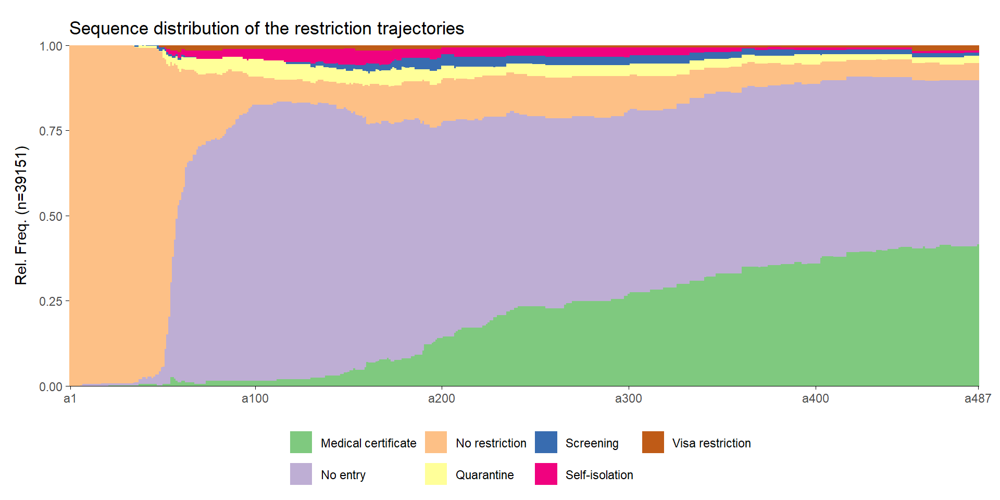
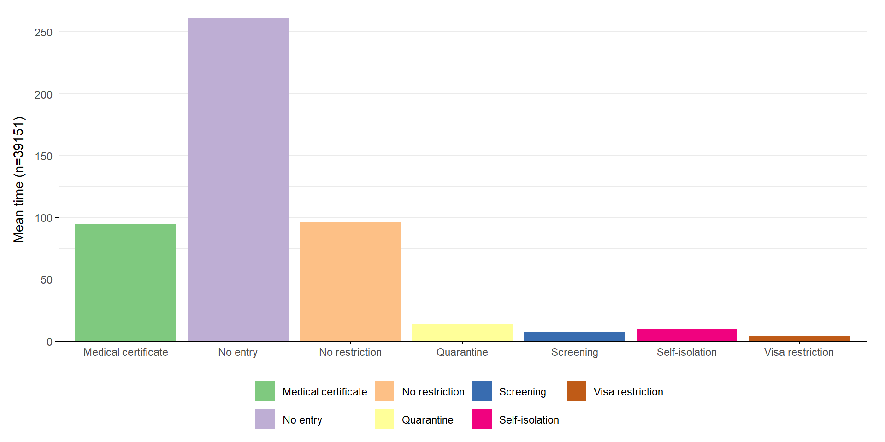

Covid-19 travel restriction evolution
What factors influenced restriction trajectories during the pandemic?
Background overview
World Health Organization’s response (WHO, 2020)
January 30, 2020
Public health emergency of international concern
Government measures adopted globally (Thomson & Ip, 2020; Hale et al., 2021; King & Ferraz, 2023)
- Restricting international travel
Covid restriction evolution
(1) Initial response and border closures (early 2020):
China was one of the first to restrict travel from Wuhan in late December 2019, followed by other countries as the global spread became evident.
Many nations implemented border closures or partial restrictions, limiting non-essential travel.
Covid restriction evolution
(2) Implementation of strict measures (mid-2020):
Introduction of PCR tests for international arrivals to check for COVID-19.
Quarantine requirements upon arrival, sometimes in designated facilities like hotels until test results were available.
Travel bans and flight suspensions from high-risk areas.
Covid restriction evolution
(3) Regional coordination (mid-2020 onwards):
- The EU introduced strict controls, allowing only essential travelers across borders.
Covid restriction evolution
(4) Adaptation with vaccine rollout (late 2021):
As vaccines became available, some countries allowed vaccinated individuals to bypass certain restrictions, such as testing and quarantines.
Proof of vaccination or negative tests became key requirements for entry in many places.
Impact on global mobility
- Stranded travelers (Benton et al. 2021; Nehring & Hu, 2022)
- July 2020
- Three million individuals
- Cross-border movement priorities
- most international travel halted
- states allowed specific categories of travelers entry during the pandemic period
Overall result
Inconsistent policies
Confusion among travelers
Economic impacts from reduced tourism
Varying regional approaches based on local conditions
Uncertainty
What factors influenced restriction trajectories during the pandemic?
Methodology
Methodology
Restriction = Relationship
Methodology
Restriction = Relationship

Methodology
Restriction = Relationship

Methodology
Restriction = Relationship

Methodology
Restriction = Relationship


Methodology
Restriction = Relationship
Network of restrictions

Methodology
Part 1: Sequence analysis
Part 2: Multilevel cross-classified model
Sequence analysis

Sequence analysis
Goal
Analyze trends of restrictions
Group similar trends together
Use this cluster in the network

Sequence analysis
Sequence analysis

Sequence analysis
Multilevel cross-classified model
Base
Regression model with natural clustering
Nested level
Here
Individual level: restriction between 2 countries
Level 1: country ruling the restriction
Level 2: country receiving the restriction
Multilevel cross-classified model
\[ y_{jkl} = \beta_0 + \beta_1 X_{jkl} + u_k + v_l + e_{jkl}, \]
\[ u_k \sim N(0, \sigma_u^2), \quad v_l \sim N(0, \sigma_v^2), \quad e_{jkl} \sim N(0, \sigma_e^2). \]
\(y_{jkl}\) restriction trajectory
\(\beta_0\) is the overall intercept
\(\beta_1 X_{jkl}\) restriction level variables
\(u_k\) random effect of the country A
\(v_l\) random effect of the country B
\(e_{jkl}\) residual error term at the individual level
Dataset
International Travel Restrictions in Response to the COVID-19 Outbreak Dataset captures:
- detailed entry restrictions and exemptions
- for 211 countries
- from January 24, 2020, to May 24, 2021
Types of travel restrictions
Entry screening and vaccination requirements (Benton et al., 2024; Martin & Bergmann, 2021).
Border closures and quarantine measures (Piccoli et al., 2020).
Unequal pattern
The restrictions during the Covid period were not uniform and depended on several characteristics:
The country of origin: residence or transit
The status of the individual: repatriated persons, international workers, etc.
The type of restriction: COVID passport, lockdown, ban
Country of origin
There is ~193 countries in this dataset that ruled travel restriction
There is ~224 countries targeted by travel restriction
We are looking at sequences of pairs of country-target
Restriction Based on:
- Presence, Residence or Nationality
Country of origin
There is ~193 countries in this dataset that ruled travel restriction
There is ~224 countries targeted by travel restriction
We are looking at sequences of pairs of country-target
Restriction Based on:
- Presence
Type of restriction
Self-isolation
Screening
Quarantine
Medical certificate
Visa restriction
No entry
Type of restriction
Self-isolation
Screening
Quarantine
Medical certificate
Visa restriction
No entry
Type of restriction
No restriction
Self-isolation
Screening
Quarantine
Medical certificate
Visa restriction
No entry
Summary
Time: from January 24, 2020, to May 24, 2021 (487 states)
Restriction overlap: Keep the highest level of restriction
Missing trajectories: No information for all country-target pairs
Medium size dataset: ~40’000 trajectories, each 487 states
What factors influenced restriction trajectories during the pandemic?
(Diff) Quarterly Covid-19 Cases Numbers (seasonality)
(Diff) GDP/GDP of the receiving country (higher=stricter)
Continent/Distance
Net migration
First result
Mean time spent in each state
Limitations
Incomplete information (No restriction, Marshall Island)
Collective restriction (ex. Switzerland)
Only until May 24, 2021
Hierachy of restriction diminish other type
Next steps
Non-restriction
Why?
Keep/remove?
Cluster
Multilevel cross-classified model
- Variables selection
Thank you for your attention